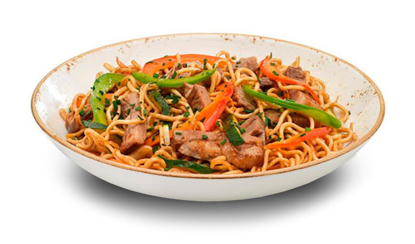

Chicken or Beef Yakisoba

Description
This delicious Japanese noodle, veggie and meat dish is bound to make any nonbeliever
into a true prophet. As a simple variation of the meal, it can be made quickly and
without much of a fuss, allowing for even the busiest of individuals to enjoy
any day of the week.
Here, we will show you how to make this yummy, healthy dinner in the following steps!
Ingredients
- 2 whole carrots, shaved or sliced
- 1 head of broccoli, chopped
- 1/2 yellow onion, sliced
- 3 green onions, chopped
- 1/2 bell pepper, sliced (optional)
- 5-6 mushrooms, sliced (optional)
- Soba or Udon noodles
- 1 chicken breast, sliced or 1/2 lb. beef, sliced
- 1/2 cup teriyaki sauce
- 1/4 cup sesame oil or your favorite cooking oil
- Sesame seeds to top (optional)
Note: We highly recommend using sesame oil
as opposed to any other cooking oil due to the flavor it imparts on the veggies.
If you don't have it, it's not necessary but adds a lot to the overall dish flavor.
Steps
- Prep veggies and cook your noodles.
- Combine all your veggies in a skillet with oil and saute until golden brown.
- Cook meat with oil in a separate pan. Once cooked, slice into strips.
- Add meat and veggies into the same pan and stir in sauce to combine.
- Add noodles into the mixture.
- Top with sliced green onion, and optional sesame seeds.
- Serve and enjoy!